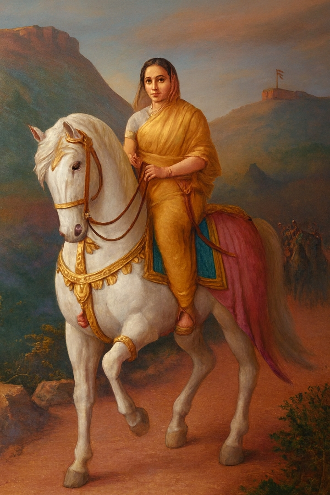

Maharani Tarabai Bhosale (1675–1761) was a fearless Maratha queen and regent
who defended the Maratha Empire against Mughal invasions after the death
of her husband, Rajaram I. Her courage, strategic brilliance, and warrior
spirit safeguarded Swarajya and upheld the legacy of Chhatrapati Shivaji
Maharaj. She remains one of the most powerful and inspiring women in
Indian history.

Maharani Tarabai Bhosale
(1675–1761)